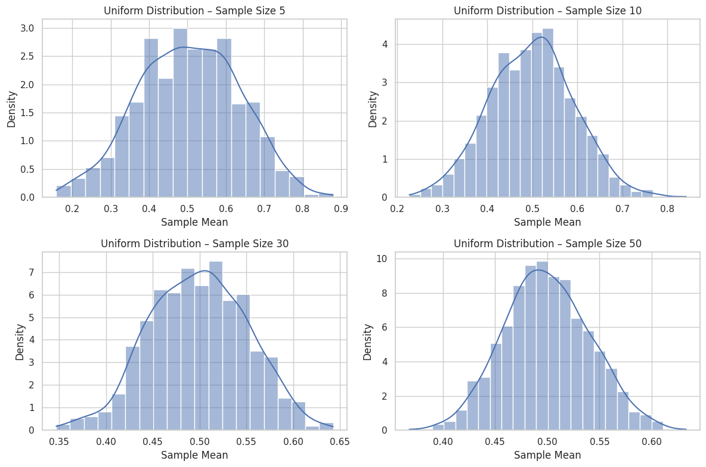
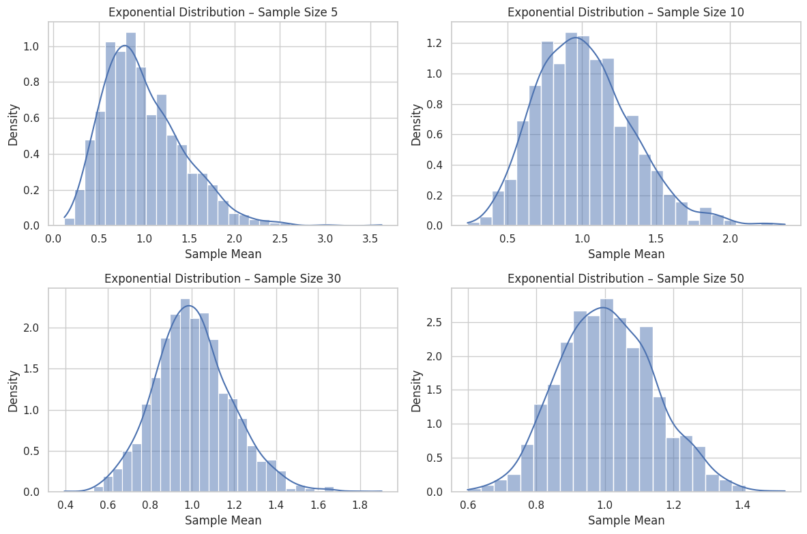
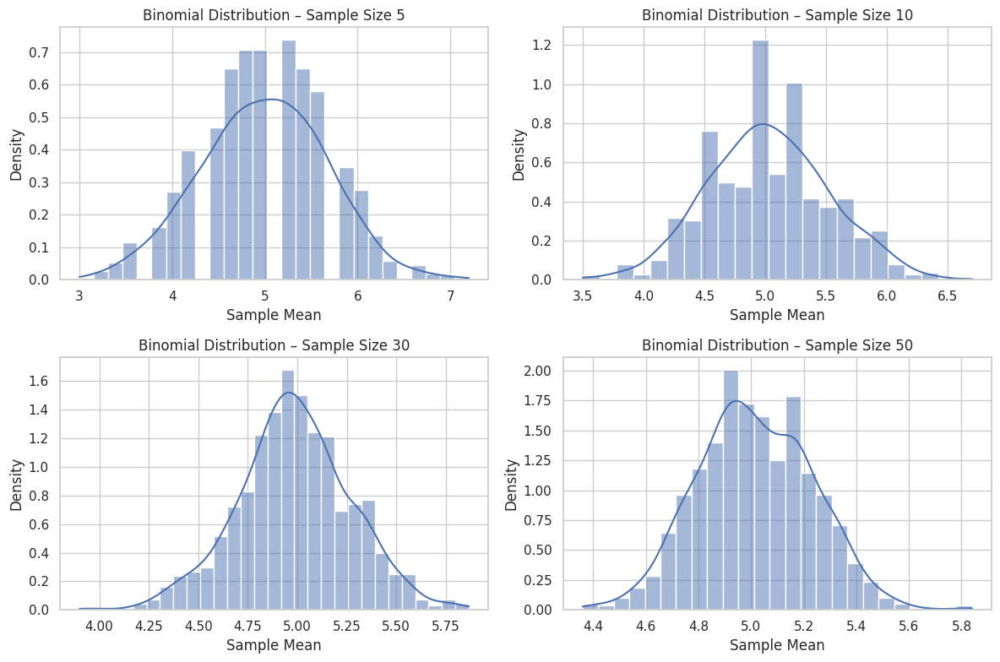
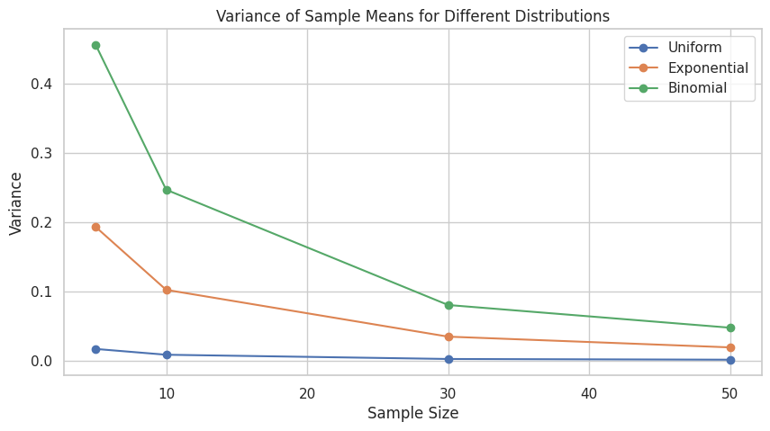

Problem 1
Central Limit Theorem (CLT) – Simulation and Analysis
1. Population Distributions Used
We will use three types of distributions to represent different population shapes:
- Uniform Distribution: All values are equally likely. (Symmetric)
- Exponential Distribution: Highly right-skewed. (Asymmetric)
- Binomial Distribution: Discrete distribution counting the number of successes in fixed trials.
Each population will consist of a large number of data points (e.g., 100,000 values) to closely approximate a real-world dataset.
2. Sampling and Sample Means
From each population, we will:
- Randomly draw many samples of fixed sizes (e.g., 5, 10, 30, 50).
- Compute the sample mean for each sample.
What Is a Sample Mean?
The sample mean (average) of a sample of size \(n\) is given by: $$ [ \bar{X} = \frac{1}{n} \sum_{i=1}^{n} X_i ] $$ We will repeat the sampling process many times (e.g., 1,000 times per sample size) to build a sampling distribution of the sample mean.
3. Visualization of Sampling Distributions
We will plot histograms of sample means for each sample size. As the sample size increases:
- The shape of the sampling distribution becomes more bell-shaped.
- The distribution gets more concentrated around the true population mean.
This visually demonstrates how the CLT works in practice.
4. Effect of Sample Size on Spread
According to the CLT, the variance of the sample mean decreases as the sample size increases:
This means that:
- Larger samples lead to more consistent and reliable sample means.
- The spread (standard deviation) of the sampling distribution gets smaller as \(n\) increases.
We will plot how the variance of the sample means changes with different sample sizes for each distribution.
5. Reflections and Real-World Applications
Why is the Central Limit Theorem so important?
Parameter Estimation:
- It justifies using sample means to estimate unknown population means.
- Confidence intervals are based on the assumption of normality of sample means.
Quality Control:
- In manufacturing, means of product measurements are monitored using control charts, assuming normality.
Finance and Economics:
- Financial returns of diversified portfolios often behave like normal distributions due to the CLT.
Hypothesis Testing:
- Most parametric tests rely on the assumption that the sampling distribution of the test statistic is normal.
6. Python Simulation
import numpy as np
import matplotlib.pyplot as plt
import seaborn as sns
# Set seed for reproducibility
np.random.seed(42)
# ----- Population Generation -----
population_size = 100_000
pop_uniform = np.random.uniform(0, 1, population_size)
pop_exponential = np.random.exponential(scale=1.0, size=population_size)
pop_binomial = np.random.binomial(n=10, p=0.5, size=population_size)
# ----- Plot Population Distribution -----
def plot_population(data, title):
plt.figure(figsize=(6, 3))
sns.histplot(data, bins=50, kde=True)
plt.title(f'{title} Population')
plt.xlabel('Value')
plt.ylabel('Frequency')
plt.grid(True)
plt.show()
plot_population(pop_uniform, "Uniform")
plot_population(pop_exponential, "Exponential")
plot_population(pop_binomial, "Binomial")
# ----- Simulate Sampling Distribution -----
def simulate_sampling_distribution(population, sample_sizes, num_samples=1000):
result = {}
for size in sample_sizes:
means = [np.mean(np.random.choice(population, size, replace=False)) for _ in range(num_samples)]
result[size] = means
return result
# ----- Plot Sampling Distributions -----
def plot_sampling_distributions(sampling_distributions, title):
for size, means in sampling_distributions.items():
plt.figure(figsize=(6, 3))
sns.histplot(means, kde=True, stat="density")
plt.title(f'{title} – Sample Size {size}')
plt.xlabel('Sample Mean')
plt.ylabel('Density')
plt.grid(True)
plt.show()
# ----- Plot Variance Shrinkage -----
def plot_variance_change(sampling_distributions, title):
sizes = list(sampling_distributions.keys())
variances = [np.var(means) for means in sampling_distributions.values()]
plt.figure(figsize=(5, 3))
plt.plot(sizes, variances, marker='o')
plt.title(f'Variance of Sample Means – {title}')
plt.xlabel('Sample Size')
plt.ylabel('Variance')
plt.grid(True)
plt.show()
# ----- Run Simulations -----
sample_sizes = [5, 10, 30, 50]
uniform_samples = simulate_sampling_distribution(pop_uniform, sample_sizes)
exp_samples = simulate_sampling_distribution(pop_exponential, sample_sizes)
binom_samples = simulate_sampling_distribution(pop_binomial, sample_sizes)
# ----- Plot Sampling Distributions -----
plot_sampling_distributions(uniform_samples, "Uniform Distribution")
plot_sampling_distributions(exp_samples, "Exponential Distribution")
plot_sampling_distributions(binom_samples, "Binomial Distribution")
# ----- Plot Variance Shrinkage -----
plot_variance_change(uniform_samples, "Uniform")
plot_variance_change(exp_samples, "Exponential")
plot_variance_change(binom_samples, "Binomial")




7. Summary and Conclusion
- The Central Limit Theorem holds regardless of the original population shape — even if it is skewed or discrete.
- Symmetric populations (e.g., uniform, binomial) converge to normality faster.
- Skewed distributions (e.g., exponential) need larger sample sizes for the sample mean distribution to resemble a normal distribution.
- The standard deviation (spread) of the sample mean shrinks with increasing sample size — providing more precise estimates.
This simulation clearly illustrates the power and universality of the CLT in statistics and real-world applications.